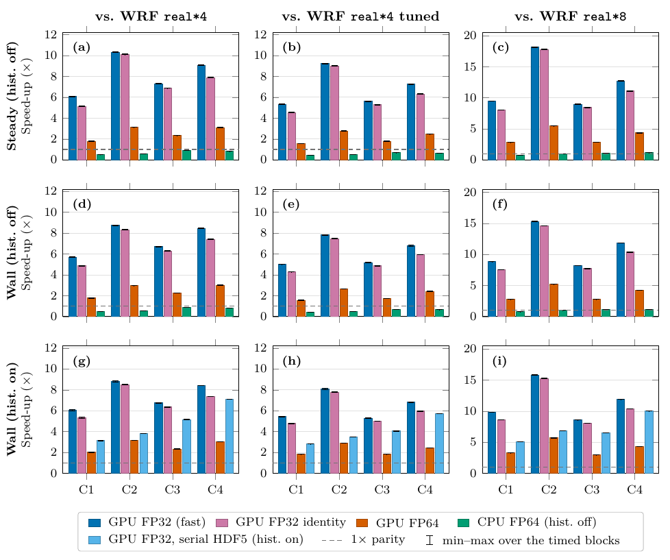
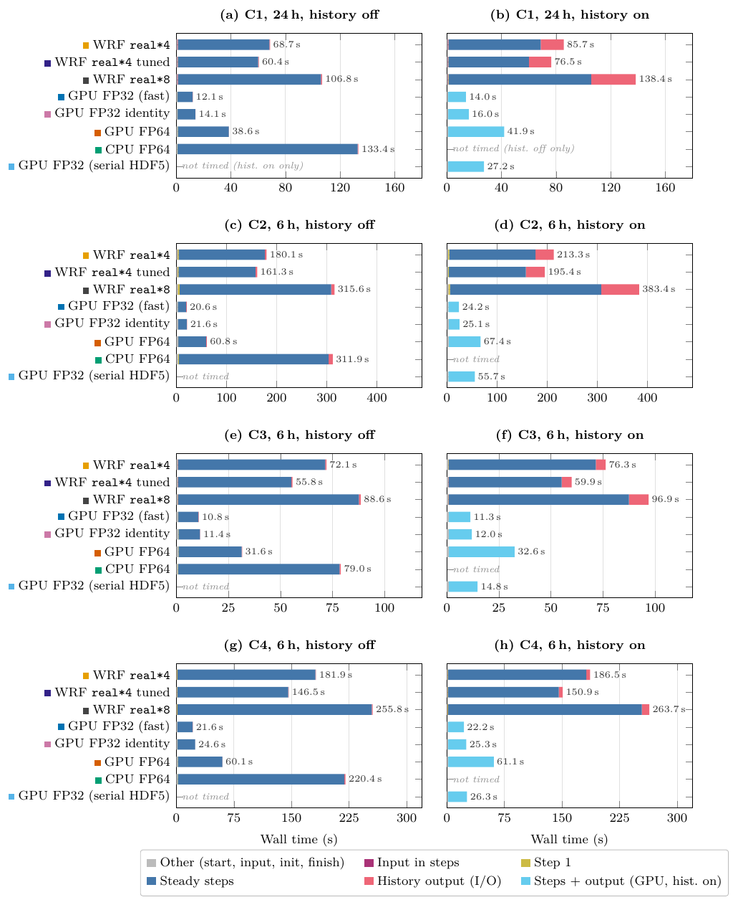
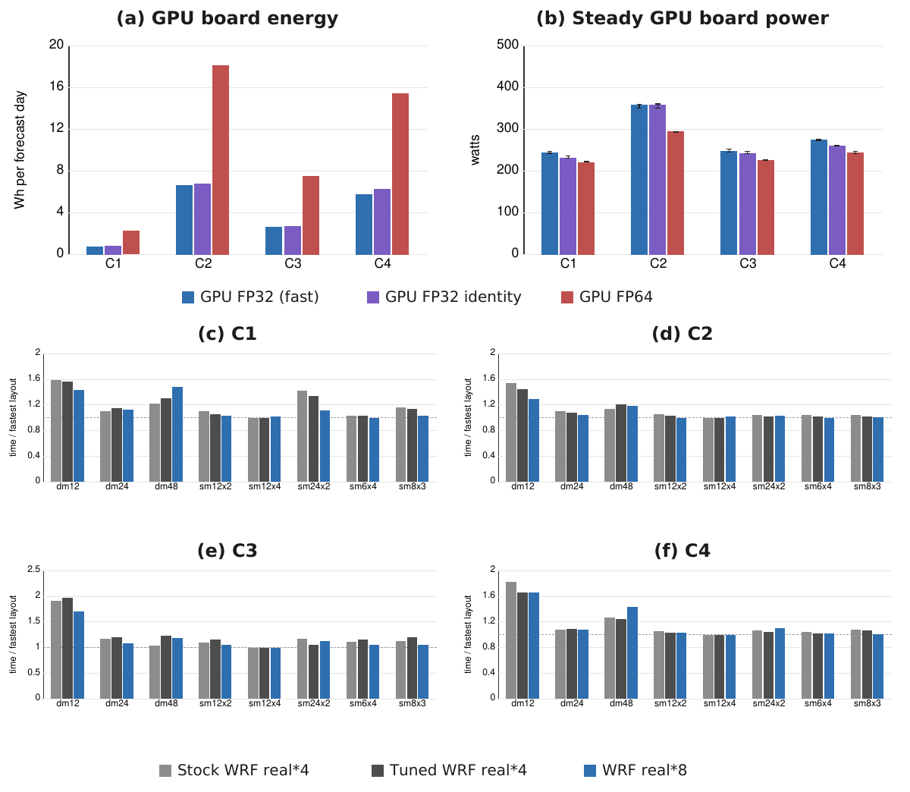

The paper benchmark ran on one Google Colab G4 runtime on 23–24 November 2026, using the model code of CPPWRF release 1.4.0 (a63ed9f) and WRF v4.8.0.
Benchmark protocol
Hardware and builds
One NVIDIA RTX PRO 6000 Blackwell Server Edition (96 GB) and an AMD EPYC 9B45 (24 cores, 48 hardware threads). CPPWRF ran CUDA FP32 fast, CUDA FP32 identity, CUDA FP64 and OpenMP CPU FP64.
WRF used GNU gfortran 14.2, glibc 2.41 and MPICH. The stock real*4 and real*8 builds used -O2 -ftree-vectorize -funroll-loops. The tuned real*4 build used -O3 -march=native. CPPWRF’s CPU FP64 build used -O3 -march=native with contraction disabled.
Timing and layouts
Steady stepping excludes the first step and subtracts timed input and output from subsequent domain 1 steps. With history off, the models write the initial frame only. With hourly history, the paper reports wall time from launch to exit.
WRF uses the fastest of eight screened MPI or MPI + OpenMP layouts for each case and build. CPPWRF’s CPU FP64 uses the faster of 24 and 48 OpenMP threads. Its CUDA builds use one GPU with four OpenMP host threads. Speed-ups are medians of within-block WRF-to-CPPWRF time ratios.
Benchmark cases
Case
Configuration
Cells
Steps
Length
C1
ConfigurationP4, radiation every 15 min
Cells119 × 89 × 44 (466k)
Steps1440
Length24 h from 00 UTC
C2
ConfigurationP4, radiation every 15 min, daytime large domain
Cells359 × 269 × 44 (4.25M)
Steps360
Length6 h from 06 UTC
C3
ConfigurationP4 with Morrison, radiation every minute
Cells119 × 89 × 44
Steps360
Length6 h from 00 UTC
C4
ConfigurationP4 with a two-way 5 km nest (120 × 90 × 44), radiation every minute
Cells466k + 475k
Steps360 + 1080
Length6 h from 00 UTC
All cases start from GFS analyses of 12 October 2026 processed by WPS and real.exe. The base grid uses 15 km spacing, 44 levels and a 60 s time step. The C4 nest uses a 20 s time step. P4 uses WSM6 (Morrison in C3), Kain–Fritsch, YSU, the revised MM5 surface layer, Noah and RRTMG.
Steady stepping with history off
Same-precision speed-ups use stock WRF real*4 for the FP32 builds and stock WRF real*8 for the FP64 builds. Timings use five blocks, with three for CPPWRF CPU FP64.
Median seconds per simulated hour (speed-up in parentheses)
Case
WRF real*4
WRF real*4 tuned
WRF real*8
GPU FP32 fast
GPU FP32 identity
GPU FP64
CPU FP64
C1
WRF real*42.82
WRF real*4 tuned2.49
WRF real*84.37
GPU FP32 fast0.46 (6.16×)
GPU FP32 identity0.53 (5.34×)
GPU FP641.53 (2.86×)
CPU FP645.57 (0.79×)
C2
WRF real*428.7
WRF real*4 tuned25.6
WRF real*850.7
GPU FP32 fast2.72 (10.54×)
GPU FP32 identity2.78 (10.32×)
GPU FP649.16 (5.53×)
CPU FP6449.7 (1.02×)
C3
WRF real*411.8
WRF real*4 tuned9.04
WRF real*814.5
GPU FP32 fast1.58 (7.47×)
GPU FP32 identity1.67 (7.07×)
GPU FP644.93 (2.94×)
CPU FP6412.2 (1.19×)
C4
WRF real*430.1
WRF real*4 tuned24.2
WRF real*839.9
GPU FP32 fast3.13 (9.66×)
GPU FP32 identity3.58 (8.42×)
GPU FP649.43 (4.23×)
CPU FP6435.9 (1.11×)
The coefficient of variation of steady times across timed blocks was at most 0.80%.
Process layouts and normalized rates
Process layouts for steady stepping
Case
WRF real*4
WRF real*4 tuned
WRF real*8
GPU FP32 fast
GPU FP32 identity
GPU FP64
CPU FP64
C1
WRF real*4sm12x4
WRF real*4 tunedsm12x4
WRF real*8sm6x4
GPU FP32 fast1 GPU
GPU FP32 identity1 GPU
GPU FP641 GPU
CPU FP64omp48
C2
WRF real*4sm12x4
WRF real*4 tunedsm12x4
WRF real*8sm12x2
GPU FP32 fast1 GPU
GPU FP32 identity1 GPU
GPU FP641 GPU
CPU FP64omp48
C3
WRF real*4sm12x4
WRF real*4 tunedsm12x4
WRF real*8sm12x4
GPU FP32 fast1 GPU
GPU FP32 identity1 GPU
GPU FP641 GPU
CPU FP64omp48
C4
WRF real*4sm12x4
WRF real*4 tunedsm12x4
WRF real*8sm12x4
GPU FP32 fast1 GPU
GPU FP32 identity1 GPU
GPU FP641 GPU
CPU FP64omp48
smNxT denotes N MPI ranks × T OpenMP threads. omp24 and omp48 denote the corresponding OpenMP thread counts. The normalized rate for C4 counts both domains (466,004 cells × 360 steps and 475,200 cells × 1080 steps).
Nanoseconds per grid cell and step
Case
WRF real*4
WRF real*4 tuned
WRF real*8
GPU FP32 fast
GPU FP32 identity
GPU FP64
CPU FP64
C1
WRF real*4101
WRF real*4 tuned89.1
WRF real*8156
GPU FP32 fast16.4
GPU FP32 identity18.9
GPU FP6454.6
CPU FP64199
C2
WRF real*4112
WRF real*4 tuned100
WRF real*8199
GPU FP32 fast10.7
GPU FP32 identity10.9
GPU FP6435.9
CPU FP64195
C3
WRF real*4423
WRF real*4 tuned323
WRF real*8518
GPU FP32 fast56.6
GPU FP32 identity59.8
GPU FP64176
CPU FP64437
C4
WRF real*4265
WRF real*4 tuned213
WRF real*8351
GPU FP32 fast27.5
GPU FP32 identity31.5
GPU FP6483.1
CPU FP64316
Simulated years per day of steady stepping
Case
WRF real*4
WRF real*4 tuned
WRF real*8
GPU FP32 fast
GPU FP32 identity
GPU FP64
CPU FP64
C1
WRF real*43.49
WRF real*4 tuned3.96
WRF real*82.25
GPU FP32 fast21.5
GPU FP32 identity18.6
GPU FP646.45
CPU FP641.77
C2
WRF real*40.34
WRF real*4 tuned0.38
WRF real*80.19
GPU FP32 fast3.62
GPU FP32 identity3.55
GPU FP641.08
CPU FP640.20
C3
WRF real*40.83
WRF real*4 tuned1.09
WRF real*80.68
GPU FP32 fast6.22
GPU FP32 identity5.89
GPU FP642.00
CPU FP640.81
C4
WRF real*40.33
WRF real*4 tuned0.41
WRF real*80.25
GPU FP32 fast3.15
GPU FP32 identity2.76
GPU FP641.04
CPU FP640.27
Wall time with hourly history
The runs write NetCDF-4 using WRF’s chunking, shuffle and deflate level 2. The 24 h C1 run writes 25 frames per domain. Each 6 h run writes 7. Times and speed-ups are medians across three timed blocks.
Across C1–C4, fast CUDA FP32 was 3.1–7.4× as fast as stock WRF real*4 when both used serial HDF5 compression, and 6.1–8.9× as fast with CPPWRF’s threaded compression.
Wall times, speed-ups and GPU energy for all cases
Median wall time and GPU runtime charges with hourly history
Case and build
Wall (s)
vs stock WRF real*4
vs stock WRF real*8
CU / day
GPU kJ / day
C1 · WRF real*4
Wall (s)84.5
vs stock WRF real*4—
vs stock WRF real*8—
CU / day—
GPU kJ / day—
C1 · WRF real*4 tuned
Wall (s)78.7
vs stock WRF real*4—
vs stock WRF real*8—
CU / day—
GPU kJ / day—
C1 · WRF real*8
Wall (s)139.0
vs stock WRF real*4—
vs stock WRF real*8—
CU / day—
GPU kJ / day—
C1 · GPU FP32 fast
Wall (s)14.0
vs stock WRF real*46.10×
vs stock WRF real*89.98×
CU / day0.039
GPU kJ / day3.0
C1 · GPU FP32 identity
Wall (s)15.7
vs stock WRF real*45.37×
vs stock WRF real*88.81×
CU / day0.044
GPU kJ / day3.3
C1 · GPU FP64
Wall (s)41.4
vs stock WRF real*42.04×
vs stock WRF real*83.36×
CU / day0.116
GPU kJ / day8.5
C1 · GPU FP32 fast, serial HDF5
Wall (s)27.2
vs stock WRF real*43.11×
vs stock WRF real*85.11×
CU / day0.076
GPU kJ / day4.2
C2 · WRF real*4
Wall (s)212.6
vs stock WRF real*4—
vs stock WRF real*8—
CU / day—
GPU kJ / day—
C2 · WRF real*4 tuned
Wall (s)194.7
vs stock WRF real*4—
vs stock WRF real*8—
CU / day—
GPU kJ / day—
C2 · WRF real*8
Wall (s)388.8
vs stock WRF real*4—
vs stock WRF real*8—
CU / day—
GPU kJ / day—
C2 · GPU FP32 fast
Wall (s)23.9
vs stock WRF real*48.88×
vs stock WRF real*816.34×
CU / day0.234
GPU kJ / day25.2
C2 · GPU FP32 identity
Wall (s)24.8
vs stock WRF real*48.56×
vs stock WRF real*815.73×
CU / day0.239
GPU kJ / day25.3
C2 · GPU FP64
Wall (s)67.5
vs stock WRF real*43.14×
vs stock WRF real*85.77×
CU / day0.704
GPU kJ / day67.3
C2 · GPU FP32 fast, serial HDF5
Wall (s)55.4
vs stock WRF real*43.84×
vs stock WRF real*87.01×
CU / day0.564
GPU kJ / day34.2
C3 · WRF real*4
Wall (s)76.0
vs stock WRF real*4—
vs stock WRF real*8—
CU / day—
GPU kJ / day—
C3 · WRF real*4 tuned
Wall (s)59.8
vs stock WRF real*4—
vs stock WRF real*8—
CU / day—
GPU kJ / day—
C3 · WRF real*8
Wall (s)96.8
vs stock WRF real*4—
vs stock WRF real*8—
CU / day—
GPU kJ / day—
C3 · GPU FP32 fast
Wall (s)11.1
vs stock WRF real*46.83×
vs stock WRF real*88.70×
CU / day0.115
GPU kJ / day9.6
C3 · GPU FP32 identity
Wall (s)11.8
vs stock WRF real*46.44×
vs stock WRF real*88.21×
CU / day0.121
GPU kJ / day10.0
C3 · GPU FP64
Wall (s)31.9
vs stock WRF real*42.38×
vs stock WRF real*83.03×
CU / day0.345
GPU kJ / day27.3
C3 · GPU FP32 fast, serial HDF5
Wall (s)14.6
vs stock WRF real*45.19×
vs stock WRF real*86.64×
CU / day0.152
GPU kJ / day10.8
C4 · WRF real*4
Wall (s)186.4
vs stock WRF real*4—
vs stock WRF real*8—
CU / day—
GPU kJ / day—
C4 · WRF real*4 tuned
Wall (s)150.6
vs stock WRF real*4—
vs stock WRF real*8—
CU / day—
GPU kJ / day—
C4 · WRF real*8
Wall (s)249.4
vs stock WRF real*4—
vs stock WRF real*8—
CU / day—
GPU kJ / day—
C4 · GPU FP32 fast
Wall (s)21.1
vs stock WRF real*48.85×
vs stock WRF real*811.84×
CU / day0.221
GPU kJ / day21.2
C4 · GPU FP32 identity
Wall (s)23.9
vs stock WRF real*47.80×
vs stock WRF real*810.44×
CU / day0.252
GPU kJ / day22.8
C4 · GPU FP64
Wall (s)59.8
vs stock WRF real*43.12×
vs stock WRF real*84.16×
CU / day0.651
GPU kJ / day56.2
C4 · GPU FP32 fast, serial HDF5
Wall (s)25.2
vs stock WRF real*47.39×
vs stock WRF real*89.88×
CU / day0.264
GPU kJ / day22.5
CPPWRF normally compresses chunks on host threads. The serial HDF5 build row uses the same fast FP32 binary with CPPWRF_NC_THREADS=0. GPU board energy and Colab compute units (CU) per simulated day count start-up once plus 24 hours of marginal cost. The runtime rate was 10.05 CU per wall-clock hour. The benchmark measured GPU board energy only and recorded no CPU-only runtime rate for WRF.
Exact checks within the benchmark
Comparisons use every variable and frame at tolerance 0, including dimensions, types and attributes, with TITLE excluded. On the AMD host, the default CPPWRF FP64 build uses Intel-equivalent vector log and log10. The CPU FP64 machine-math build uses the host’s versions.
Exact comparisons in the history-on benchmark
Comparison
Expected
Result
GPU FP64 vs CPU FP64
Expectedidentical
Resultidentical in 4 / 4
CPU FP64 (this CPU's vector log) vs WRF real*8 built here, one process
Expectedidentical
Resultidentical in 4 / 4
CPU FP64 (default: Intel's vector log) vs CPU FP64 (this CPU's vector log)
Expecteddiffers on AMD
Resultidentical in 0 / 4
CPU FP64 (default) vs WRF real*8 built here, one process
Expecteddiffers on AMD
Resultidentical in 0 / 4
GPU FP32 identity vs CPU FP32
Expectedidentical
Resultidentical in 4 / 4
CPU FP32 vs WRF real*4 built here, one process
Expectedinformative
Resultidentical in 0 / 4
The local WRF real*4 comparison uses a vector powf that depends on the host’s approximate reciprocal instruction. CPPWRF’s FP32 build uses the Intel values. The benchmark’s C1–C4 WRF runs were made on the AMD host.
Paper figures
Speed-up by case and WRF build

Columns compare CPPWRF with stock WRF real*4, tuned WRF real*4 and WRF real*8 at their fastest screened layouts. The rows show steady stepping with history off, wall time with history off and wall time with hourly history. For each case and build, bars show median speed-ups and whiskers span the smallest to largest per-block ratios. The serial HDF5 bars use fast FP32 with HDF5’s serial filter. Full-size plot
Wall-time breakdown

For each case and build, the plot splits the run with median wall time into steady steps, the first step, history output, input reads during stepping and the remaining time. The left panel shows history off. The right panel shows hourly history, where CUDA stepping and output overlap and share a segment. Any CPPWRF input reads during steps count toward stepping or the remaining time. Full-size plot
GPU energy and WRF layout screening

The upper panels show GPU board energy in Wh per simulated day and steady GPU board power in watts, both with history off. Power bars show the median of five block means, with whiskers spanning their full range. The lower panels show median WRF step time from two 30-minute runs per layout, relative to the fastest screened layout for the same case and build. Full-size plot
Earlier CPU MPI scaling measurements
A separate measurement on one Colab G4 compared WRF real*8 distributed memory with CPPWRF CPU FP64 using MPICH over shared memory. Each rank used one thread. History was off and each layout was timed once.
Selected rank counts and stepping times
Stepping seconds per simulated hour at selected rank counts
Case and ranks
WRF real*8
CPPWRF CPU FP64
Speed ratio
P4 · 1
WRF real*8168.7
CPPWRF CPU FP64164.0
Speed ratio1.03
P4 · 8
WRF real*827.2
CPPWRF CPU FP6423.5
Speed ratio1.16
P4 · 24
WRF real*810.3
CPPWRF CPU FP6411.2
Speed ratio0.92
P4 · 48
WRF real*813.8
CPPWRF CPU FP6411.2
Speed ratio1.24
L · 6
WRF real*887.2
CPPWRF CPU FP64142.2
Speed ratio0.61
L · 24
WRF real*844.9
CPPWRF CPU FP6449.4
Speed ratio0.91
L · 48
WRF real*850.0
CPPWRF CPU FP6453.4
Speed ratio0.94
N3 · 4
WRF real*8123.9
CPPWRF CPU FP64139.6
Speed ratio0.89
N3 · 12
WRF real*849.3
CPPWRF CPU FP6458.0
Speed ratio0.85
N3 · 24
WRF real*835.8
CPPWRF CPU FP6441.8
Speed ratio0.86
N3 · 48
WRF real*844.6
CPPWRF CPU FP6447.4
Speed ratio0.94
Speed ratios use the unrounded measurements.
Paper / preprint
In preparation. The paper describes CPPWRF release 1.4.0 and reports the Colab G4 benchmark of its model code at a63ed9f. The benchmark covers one runtime and one GPU model. WRF performance uses GNU builds, with the tuned variant measured for real*4 only.